Static mark
App icon source, favicon source, desktop tray, docs cover.

dark
light
This revision keeps the mark to purple and white, sharpens the central code symbol, and drops the orbiting dot. The only motion left is the terminal cursor.
App icon source, favicon source, desktop tray, docs cover.

Home page hero, splash, loading state, active connection cue.